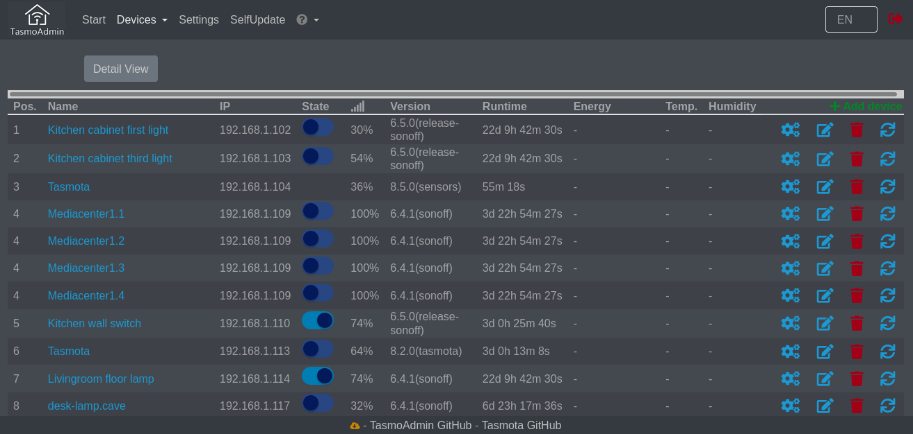
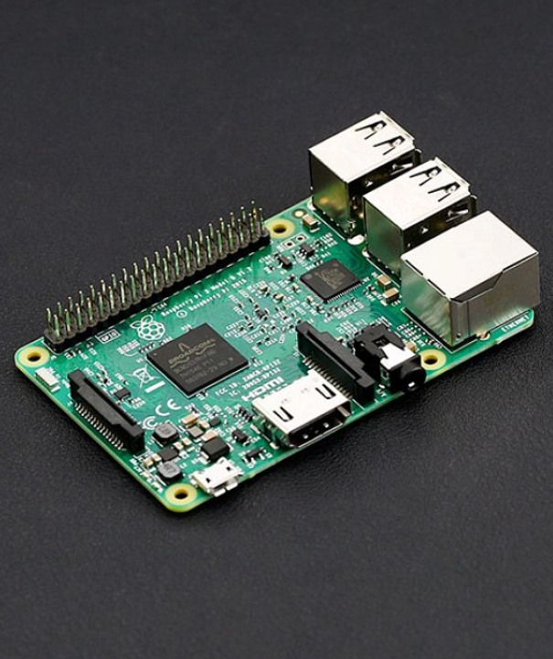
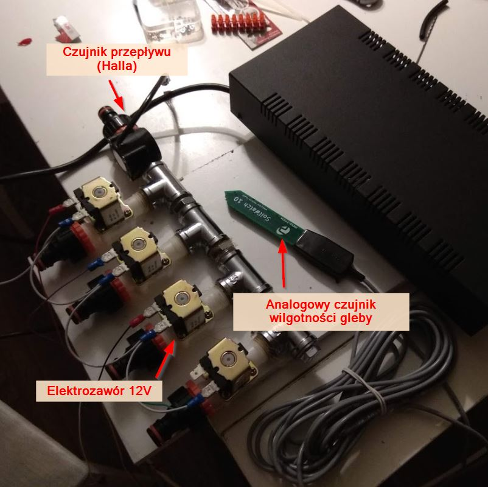
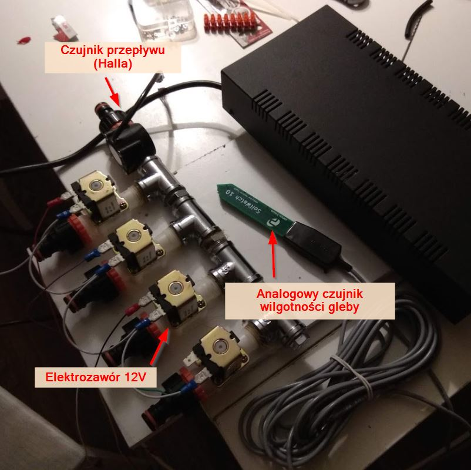
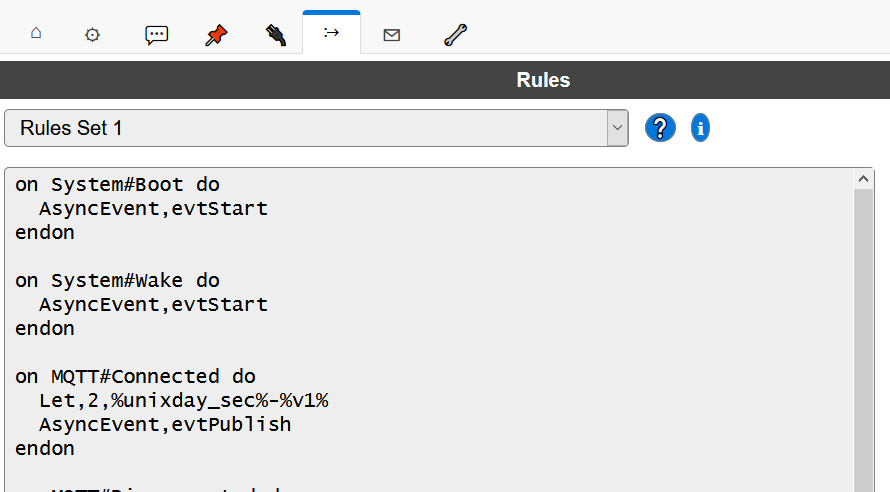
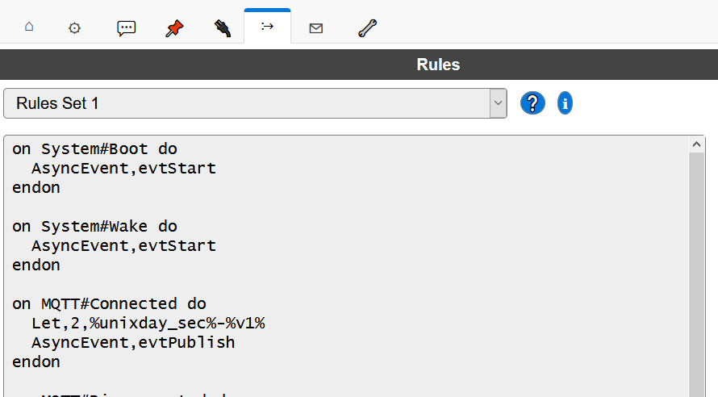

Praktyczne zastosowania ESP8266
część 2
- Maciej Małecki -
- Marcin Iwanczewski -

Architektura

TasmoAdmin
TasmoAdmin - skanowanie sieci
TasmoAdmin - lista urządzeń
Home Assistant

Raspberry Pi
Home assistant


Powiadomienia...

Najważniejsze dodatki
Home Assistant posiada Plugin-Store


MQ Telemetry Transport (MQTT)

MQTT - Quality of Service (QoS)
QoS 0 - at most once
QoS 1 - at least once
QoS 2 - exactly once
MQTT - Flagi wiadomości (Publish)
| Bit 3 | Bit 2 | Bit 1 | Bit 0 |
| DUP | QoS | QoS | RETAIN |
Tasmota
Overview projektów
- Łącznik "schodowy++"
- Wentylowana szafa na mopa
- PIR z dowolnym czasem opóźnienia wyłączenia
- RF gateway
Łącznik "schodowy++" - koncepcja
Łącznik "schodowy++" - realizacja
Wentylowana szafa na mopa


PIR z dowolnym czasem opoźnienia włączenia
PIR wygląd zewnętrzny
PIR - Konfiguracja w Tasmota
PIR - Opóźnienie w Tasmota
Rule1 on Switch1#state=1 do publish bedroom.pir.01/stat/MOTION ON;
RuleTimer1 30 endon on Rules#Timer=1 do publish bedroom.pir.01/stat/MOTION OFF endon
PIR - HomeAssistant podstawowa konfiguracja
switch:
- platform: mqtt
name: "Bed strip left"
state_topic: "bedroom.pir.01/tele/STATE"
command_topic: "bedroom.pir.01/cmnd/POWER"
availability_topic: "bedroom.pir.01/tele/LWT"
payload_on: "ON"
payload_off: "OFF"
retain: false
icon: mdi:led-strip
PIR - HomeAssistant Automation (Web UI)
Rule1 on Switch1#state=1 do publish bedroom.pir.01/stat/MOTION ON endon
on switch1#state=0 do publish bedroom.pir.01/stat/MOTION OFF endonPIR - HomeAssistant Automation (yaml)
automation:
- id: ed99a146147842d48e6479e41f4e6c62
alias: Turn on left bedstrip when there is movement
trigger:
- entity_id: binary_sensor.bedroom_pir_sensor
platform: state
to: 'on'
action:
- alias: ''
data:
entity_id: light.bedroom_left_pir_switch
service: homeassistant.turn_on
- id: b92a6c75c2ed4a94a49e758a3db6228f
alias: Turn off left bedstrip 10 seconds after last movement
trigger:
- entity_id: binary_sensor.bedroom_pir_sensor
for: 0:00:10
platform: state
to: 'off'
action:
- data:
entity_id: light.bedroom_left_pir_switch
service: homeassistant.turn_off
Sonoff RF 433 Bridge
Sonoff RF 433 Bridge - flashowanie
Sonoff RF Bridge - Konfiguracja Tasmota
Sonoff RF Bridge - Pilot
Sonoff RF Rule
Rule1 on RfReceived#Data do publish rainbow.lr/cmd/rfcode/%value% ON endonSonoff RF - HomeAssistant
binary_sensor:
- platform: mqtt
name: "RF Switch 01"
state_topic: "rainbow.lr/cmd/rfcode/F26A9C"
automation:
- id: '1588080407317'
alias: RF Movies
trigger:
- payload: 'ON'
platform: mqtt
topic: rainbow.lr/cmd/rfcode/F26A9C
condition: []
action:
- scene: scene.moviesESP Easy
Przegląd projektów (Maciek)
- Sterowanie ogrzewaniem
- Podlewanie ogrodu
- Sterowanie bramą
- Stacja pogodowa (szczegółowo)
Sterowanie ogrzewaniem
Podlewanie ogrodu (1)
 

Podlewanie ogrodu (2)
Sterowanie bramą
Stacja pogodowa z zasilaniem bateryjnym
Stacja pogodowa
- Pomiar temperatury, ciśnienia i wilgotności (BME 280),
- komunikacja WiFi z użyciem ESP8266 i ESP Easy,
- zasilanie bateryjne lub akumulatorowe,
- niskie zużycie energii dzięki "deep sleep mode",
- tryb konfiguracyjny,
- pomiar napięcia zasilania,
- regulacja i stabilizacja napięcia zasilania.
Podłączenie i konfiguracja czujnika BME 280
Zasilanie
Kalibracja pomiaru napięcia

Reguły ESP Easy
 

Publikacja danych i uśpienie
on MQTT#Connected do
AsyncEvent,evtPublish
endon
on MQTT#Disconnected do
AsyncEvent,evtNext
endon
on evtPublish do
Publish,%sysname%/vcc,[vcc#vcc]
Publish,%sysname%/temp,[weather#temp]
Publish,%sysname%/hum,[weather#hum]
Publish,%sysname%/press,[weather#press]
AsyncEvent,evtNext
endon
on evtNext do
if [dummy#mode]=0
DeepSleep,900
else
TimerSet,1,60
endif
endon
on Rules#Timer=1 do
AsyncEvent,evtPublish
endon
Konfiguracja po stronie HomeAssistant (fragment)
sensor:
- platform: mqtt
state_topic: Weather_1/temp
name: "weather-1-temp"
device_class: "temperature"
unit_of_measurement: "°C"
- platform: mqtt
state_topic: Weather_1/hum
name: "weather-1-hum"
device_class: "humidity"
unit_of_measurement: "%"
Wizualizacja (Lovelace)

Tryb konfiguracji

Tryb konfiguracji
on System#Boot do AsyncEvent,evtStart endon
on System#Wake do AsyncEvent,evtStart endon
on Rules#Timer=2 do
TaskValueSet,3,1,[Plugin#GPIO#Pinstate#14]
TimerSet,4,600
endon
on Rules#Timer=3 do
AsyncEvent,evtNext
endon
on Rules#Timer=4 do
DeepSleep,900
endif
on evtStart do
TaskValueSet,3,1,1
if [Plugin#GPIO#Pinstate#14]=1
TimerSet,2,1
else
if [vcc#vcc]<3.20
DeepSleep,4294
endif
TaskValueSet,3,1,0
endif
TimerSet,3,30
endon
Obwód wybudzania
Powiadomienia (Slack)
notify:
- name: 'slacknotifier'
platform: slack
api_key: !secret slack_api_key
default_channel: '#general'
Automatyzacja Home Assistant
Wysłanie powiadomienia przez Slack
automation:
- alias: "Notify on overhumid"
trigger:
platform: numeric_state
entity_id: sensor.weather_1_hum
above: 50
action:
- service: notify.slacknotifier
data_template:
message: "Wilgotność w łazience: {{ states('sensor.weather_1_hum') }}%"
Slack
Wizualizacja - wykresy
Akwizycja i wizualizacja danych - InfluxDB
influxdb:
api_version: 2
ssl: true
host: eu-central-1-1.aws.cloud2.influxdata.com
token: !secret influxdb_token
organization: !secret influxdb_org
bucket: homeassistant
include:
entity_globs:
- sensor.weather_*
- sensor.temp_wody
- sensor.garden_*
- sensor.garage_*